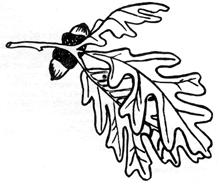

At first glance the deep snow and cold of winter might seem to preclude any harvesting of wild foods. Not so.
Our old friend, the cattail, sleeps under the ice with almost all the goodness of summer stored in his white roots and tapered new shoots. It's possible on our homestead to cut a hole in the ice of a pond, rake up enough cattail roots for biscuits, wait for the water to clear . . . then drop a small fish hook baited with a goldenrod grub down the hole and whip out the fat bluegills that came to investigate the disturbance.
I know a place in the orchard where I can dig down to a patch of strawberries that are just as green now as ever. Strawberry leaves make a good tea that is brimfull of Vitamin C and I have developed a syrup from the tea that goes good with flapjacks.
Over a hill and across the meadow a small brook tinkles and gurgles through thick woods. As soon as the sun warms a little in March, the patches of watercress in the brook will branch upward from their white roots to yield several delicious dishes.
Further north the black birch (Betula Lenta) and yellow birch (Betula Alleghaniensis) stand-naked but solid-against winter's fierce blasts, ready to yield a variety of drinks for the knowledgeable forager. Where this tree grows, very often, the mighty Hemlock also sighs in the wind like a patient lady waiting for spring. From the flat needles of the evergreen comes hemlock tea (no relation to the poison brew-made from a ground plant-that killed Socrates), a favorite of woodsmen since logging days.
I've already given directions on gathering and using cattails in my original FOOD WITHOUT FARMING (MOTHER NO. 3) so I won't go into that again. I do want to give you some rec ipes for the other wild foods I've just mentioned, however, and then I want to tell you how to make and use a Canadian Smoke Box like the ones we saw at Ranger Lake in Ontario, (MOTHER NO. 6).
Strawberry tea is brewed by, first, digging the leaves from the snow and allowing them to thaw. Then drop a double handful into a teapot and cover them with boiling water. Serve with a spoon of honey. That's all there is to it.
For strawberry leaf syrup make three cups of strawberry tea and set them aside. Combine 3/4 cup of water with 6 cups of brown sugar and mix very well. Bring this mixture to a boil and boil hard for one minute. While it's hot pour it into the strawberry tea. Stir for three minutes. Cover with tight lids. This syrup, if refrigerated, will keep for three weeks.
With that out of the way you can pull on a pair of waterproof boots, find an old pair of scissors and gather some watercress.
Watercress grows in clear, cold, flowing brooks all over the United States and Southern Canada. There are two things to remember about this plant: (1) It might be polluted if you find it growing in a polluted stream and (2) Never pull it up. Watercress should always be cut off just above its white roots.
If you suspect that your favorite watercress brook is contaminated, soak the "cress" in water containing dissolved Halazone tablets. The tablets, of course, can be purchased at almost any drugstore. Use according to directions. And see what you can do about halting the pollution at its source.
After you've gathered a good quantity of watercress try some as an addition to a meat sandwich or tossed salad or cook them as boiling greens. Boiling greens are made by placing a double handful of cleaned watercress in a saucepan. Cover with water, set on the fire and boil for three minutes. Remove, drain, add a pat of butter, season and serve.
Watercress soup is started the same way. Wash and pick over one pound of watercress. Cook for ten minutes. Drain off the water, add three tablespoons of butter and cook very slowly for 15 minutes. In a separate pan melt two tablespoons of butter and blend in two tablespoons of flour. Keep stirring, salt lightly and cook about five minutes or until the flour taste is gone. Add the blended flour and butter to the watercress and heat for about one minute. Pour into thick bowls and serve with corn bread.
Chinese watercress is probably the most vitamin-filled way to serve this plant. Heat two tablespoons of cooking oil in a large skillet. Sprinkle one tablespoon of grated fresh ginger root into the hot oil and cook two minutes. Add one pound of washed watercress. Stir and cook for four minutes. Remove from heat, toss with a few drops of soysauce and serve. Now you're ready to relax with a cup of birch tea.
Black birch makes the best tea. The black birch is a medium size tree that seldom grows more than two feet in diameter or reaches a height of 60 feet. Its leaves and twigs look much like the white or paper birch except the bark is very dark red to black. In summer a difference can be noted in the leaves: Those of the black birch are hairy underneath and slightly more oblong than those of the white birch. The real clue to identification however is the wintergreen flavor found in the twigs. The yellow birch (Betula Alleghaniensis) has wintergreen-flavored twigs also, but the black birch has a stronger-flavored oil that makes a hearty tea with less effort.
Brew birch tea by cutting about a quart of twigs into one-inch pieces. Place in a suitable pan and pour hot (but not boiling) water over them. Let the mixture steep until it's cool and strain the twigs and impurities from the water with a tea strainer. Heat again and serve warm with milk and a dash of honey.
I tried this recipe with wild honey that Joe Cummings of Bernardston, Massachusetts sent me and it was dang good. Joe is quite a fellow. One of the last of the professional bee hunters. If you want some genuine wild honey write to Joe at Hucklehill, Bernardston, Massachusetts, 01337 and I'm sure he'll take care of you.
Here is a recipe for birch beer that I got out of an old cookbook. I haven't tried it but it's enough like one in Euell Gibbon's book, Stalking The Wild Asparagus, to reassure me.
Place four quarts of black birch twigs cut into small pieces in the bottom of a five gallon crock. Add eight pounds of brown sugar to four gallons of water in a large kettle. Stir until the sugar dissolves, heat to boiling, boil for ten minutes and pour the bubbling mixture over the chopped birch twigs in the crock.
Stir in one cake of yeast dissolved in a half cup of warm water. Cover and let it work for ten days, or until the cloudiness is gone. Bottle and cap tightly. It's ready to serve immediately. Chill before serving. Caution: This is an alcoholic drink and some hemlock tea might taste good the next morning.
Hemlock tea is made by chopping hemlock needles into inch-long pieces. Pour boiling water over the needles, let steep for several minutes, strain out the needles and drink warm. Makes you wonder how some of the old-timers managed to get themselves a mild case of Scurvy every winter, when easily available tea like this would cure them of Vitamin C deficiency; doesn't it?
All this tea drinking has probably made you hungry so let's reach for some good smoked fish from our Canadian Smoke Box.
I made my 14" X 14" X 24" smoke box from scrap plywood. The 14" X 14" top and bottom each has a hole cut in it. The bottom hole is at least seven inches in diameter and is fitted with a six-inch stove pipe collar. The hole in the top is about six inches across and has a cover that slides or swivels on a screw through one corner. This sliding cover is used to regulate the amount of smoke that passes through the box.
The top is also hinged and will fold back to allow the placement of meat or fish on wire mesh shelves inside the box. Evenly spaced inside my smoker are one-inch cleats that support 12" X 13" wire mesh shelves. These mesh shelves are not fastened at all. They just set on the cleats and can be lifted out for cleaning and when filling the box. That is, the top mesh screen must be lifted out to place the meat on the bottom shelf before the smoking is started.
One of the main advantages of the Canadian Smoke Box is that it can be placed over the stove pipe of a wood stove and-when the ham or fish or whatever is cured-the box can be removed and stored. If you build one and wish to install it permanently it could be set on the edge of a hill and connected with stove pipe to a fire box below. The fire box, in that case, could be made of stones or an old barrel and should be at least ten feet from the smoke box so you can regulate the heat.
I use a home made barrel stove in the garage as the firebox for my smoker. A strap iron loop on the garage roof and a mating hook on the smoker supports the box in place. The stove pipe from the barrel stove is threaded into the collar on the bottom of the box, the box's top is swung back and the wire mesh shelves are lifted out and loaded. The sliding cover is then opened completely and a small fire is built in the stove. I am ready to start smoking after the meat and fish is prepared according to the following specifications.
Smoked venison jerky is made by slicing venison into one inch strips. Drop the strips into a boiling salt brine. This brine should be just as strong as you can make it. Keep stirring in salt until it won't dissolve anymore. Let the venison strips boil about three minutes, remove, drain and place in your smoke box. Build a small fire in the stove and when it's blazing good smother it with a double handful of slightly damp green hickory chips or sawdust.
I make my sawdust with a chain saw and every homesteader should have one. Chain sawdust looks like thin curls of wood and it works very well for smoking. Let this smoke pour around your venison jerky for at least four hours, remove, pepper the jerky and eat it.
In my opinion venison jerky is the best food in the world. If the Great Spirit told me I could have just one more meal, this is what I'd choose. If you don't have venison you can make jerky from goat meat, mutton, beef or any other meat.
Smoking with this box and barrel stove combination is a cycle of building up the fire and smothering it with green sawdust. When the flame starts to burn high on the dried out sawdust smother it again. The larger the bed of coals the more sawdust you can place on it. If you can build the coals into a bed a foot in diameter it will handle a good sized pail of green sawdust. Shut off the draft and it should smolder for hours.
There are only a couple of things that can go wrong: (1) The fire will go out because it runs out of fuel or the draft is shut too tight or, (2) it will get too hot and cook the cut you are trying to smoke.
If the fire goes out, of course, you will just build it up again and go on with the curing. Never use oil of any kind for restarting the fire as it will flavor the object being smoked. By the same token clean out all old ashes before starting a cure and never burn tarpaper or garbage in your stove while a smoking project is underway.
If the meat or fish gets too hot and is cooked it will still be edible. It might even be delicious so eat it and start over again. Smoking meat takes a little experience but is a very forgiving process and anyone can soon become an expert.
Fish are smoked in the following manner: Clean and fillet or split all fish over one pound. Wipe the pieces off with a damp cloth and place them in a "bath" made of half salt and half brown sugar. Make sure the mixture touches all parts of each fillet. Leave overnight or for about twelve hours. Next day rinse off the salt and sugar with cool water, drain and pat dry. Place the fillets on the mesh screens of your smoke box. Be sure they do not touch each other or the sides of the box. Smoke at about 100° (a thermometer is very helpful) for 24 hours, turn over and smoke another 24 hours. Keep trying the fish and don't stop until they are tender and smoke-colored clear through.
A faster way to smoke fish is to keep the temperature in the box at about 150° with very heavy smoke. Twelve hours should finish this recipe. When you get tired of fish and venison you can smoke some ham and bacon.
Cure ham by placing it in a brine made of eight pounds of salt, two pounds of sugar and two ounces of saltpeter. Add 4-1/2 gallons of water. Be sure to put the ham and brine in a glass or earthen crock. Never use metal with salt brine and don't even use a metal spoon to stir the mixture. Salt will oxidize metal into some very lethal toxins. Place a weight on the ham so that it remains completely covered by the liquid and leave it for 3-1/2 to four days to the pound. That means a ten pound ham will have to cure for more than a month.
Watch the ham as it cures for signs of the brine turning "sour."
This will be indicated by the presence of slime or rope-like discolorations in the solution.
If the brine sours remove the ham, scrub and rinse it very well. Dump the sour brine, scrub and rinse the crock. Make a new brine with same amounts of salt, sugar and saltpeter but add 5-1/2 gallons of water instead of 4-1/2. This, because there will be no unsalted juices left in the meat to dilute the solution.
When the ham is cured remove the wire shelves from your smoke box and suspend the ham from a rod placed across the top cleats. Smoke at about 80 to 100 degrees for at least 72 hours. Check it then and if it doesn't please your eye and palate, smoke the meat longer.
Bacon is cured by placing in a solution made of 5-1/2 gallons of water, eight pounds of salt, two pounds of sugar and two ounces of saltpeter. It should cure in the solution about four days to the pound. Again, watch for the brine to turn sour and make new brine if it does. This time, however, you will mix the second brine in exactly the same proportions as the first.
When the bacon is cured suspend it in your smoke box or lay it on the wire shelves and smoke for 24 hours at less than 100°, then increase the heat and smoke it for at least another 24 hours. As before, smoke the bacon until it pleases your eye and palate.
The flavor of smoked meat is largely a product of the wood used for smoking and suitable fuel can be picked up around any wooded homestead. Hickory is very good, apple is good and so is oak. In the north where hardwood trees are scarce, most folks use alder. Corncobs also work well but never-never use any resinous wood such as pine.
When you have your smoke box made and operational, try the wood in your area on some small cuts of meat before you commit that ham or fish to a smoking that you may not like.
Good luck. See you next issue.
A. Cutting 6 inches from the diameter of the barrel and bolting quarter-inch boiler plate across the opening with one-inch angle placed inside the barrel at the periphery of the cut.
B. Cutting a 5-inch diameter hole in the rear of the boiler plate and welding 2 inches of 6 inch pipe to the plate for stove pipe collar.
C. Cutting the door frame out of another piece of 10 X 13 1/2 quarter-inch boiler plate. The opening in the door frame is 8 X 10 inches. The door itself is 11-1 /2 X 8-1/2 half-inch plate steel. Hinges are 1 inch sections of 5/-8inch tubing with a 1/2-inch steel rod axis. Five inches of quarter-inch strap iron secured with 1 inch of 1-1/2-inch angle welded to the door frame makes the latch. The door frame is bolted over an 8 X 10 inch opening in the barrel.
D. The draft is controlled by blocking the barrel opening at bottom of picture with pipe bushings.
E. When barrel burns or rusts out remove top and door and install them on another barrel. This makes an excellent forge as well as a tremendous heater.
|
 Black Birch |
Water Cress |
Hemlock |
|
Smoke box in use |
... and up close |
|
|
|
|
|